Long Straddles — The Non-Directional Volatility Bet
Buy an ATM call and an ATM put on the same strike and expiry — a pure bet that the stock moves big either way, taught as groundwork, not as a retail edge.
The long straddle pairs a bought at-the-money call with a bought at-the-money put on the same strike and expiration: a non-directional, long-volatility bet that only pays if the move is large. Anton grades it Medium usefulness for retail but says it should really be Low — a market-maker's hedge, not a speculator's edge. It matters here only as the foundation for the directional strap and strip straddles that follow.
The gist
- A long straddle = BUY 1x ATM call + BUY 1x ATM put with the SAME strike and SAME expiration — two transactions, a net DEBIT, and a bet on volatility, not direction.
- It is non-directional: you assume no fundamental predisposition, only that the stock will move up and/or down in a big way.
- Parameters: Non-Directional · Volatility · Simple · Two Transactions · Debit · Max Risk (Low, Defined) · Max Gain (Unlimited).
- Payoff is V-shaped: maximum loss is the total premium paid if the stock sits AT the strike at expiry; upside is unlimited (from the call), downside gain is large (from the put).
- Two breakevens: upper = strike + total premium; lower = strike − total premium. The stock must move well past a breakeven to profit, and IV is usually already bid up before a known catalyst.
- Anton marks it Medium usefulness for retail but says it should really be Low — a 'boredom trade' for anyone with a directional view; you'd make more buying double the calls (if bullish) or double the puts (if bearish).
- Its only genuine use is for an options market maker hedging a negative-selection short-volatility book — not the retail trader mandate.
- Worked example — Company X at $50: $50 call @ $2 ($200) + $50 put @ $2 ($200) = $400 debit; breakevens $54 and $46; the stock had to move $8 (to $42 or $58) to make a meaningful $400 profit.
Volatility Bets 1 — the Long Straddle
- Video 22 opens the volatility-strategy run: six more videos in quick succession before the final-exam prep in video 28.
- The first two strategies (videos 22 and 23) are deliberately not useful for retail — they exist as groundwork.
- The four strategies that follow have a directional element and ARE useful, but they require you to understand the long straddle first.
Anton is explicit up front: he is teaching a strategy he will tell you not to trade, because you cannot understand the directional strap and strip straddles without first understanding the plain long straddle.
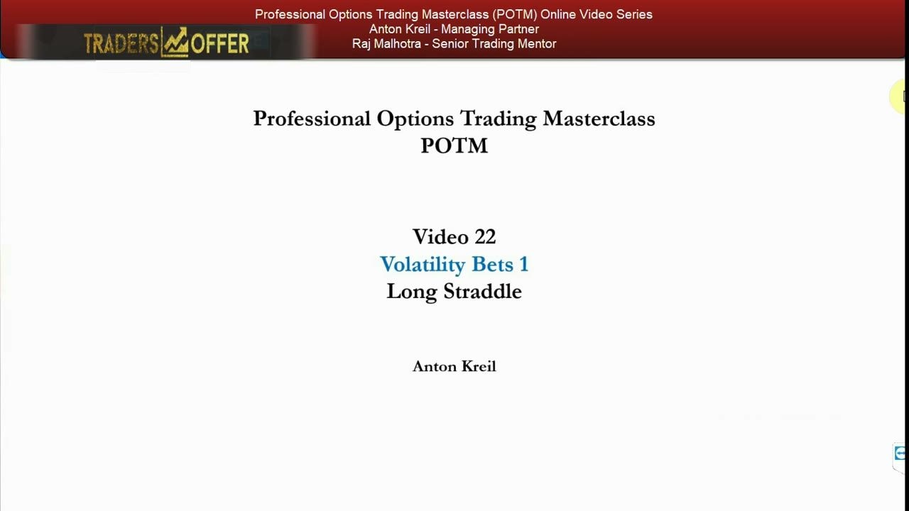
What we cover
- Quick Explanation — what the trade is and who it's for.
- When to Use the Strategy and How to Use the Strategy.
- Break Even, Profit Calculations (Maximum Upside), Risk Calculations (Maximum Downside).
- A fully worked Strategy Example.
The same structured template used across the POTM course: define the trade, state when and how it's used, work the break-even and risk math, then ground it in a numeric example.
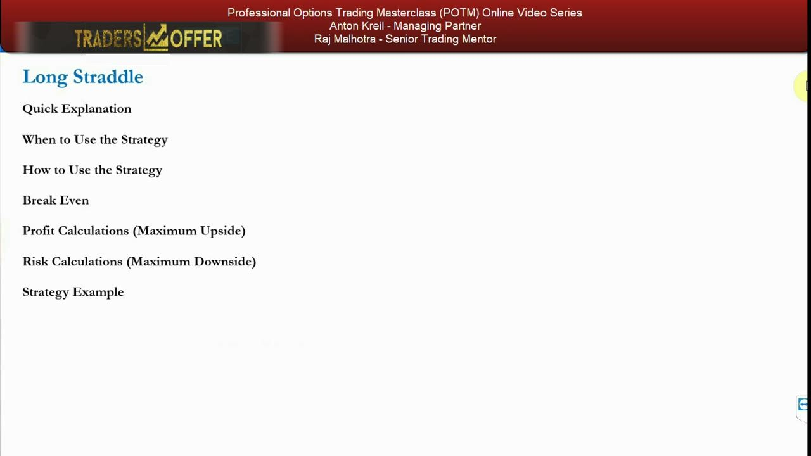
Quick explanation — buy the call, buy the put
- Buy 1x At The Money (ATM) call AND buy 1x ATM put with the SAME strike and SAME expiration.
- Non-directional: no bullish or bearish inclination, so it assumes no fundamental predisposition on the underlying.
- It is a bet that the stock will go up and/or down in a big way — a bet on volatility, not on direction.
- Marked 'Medium Usefulness' for retail — but in reality it should be 'Low'; marked Medium only because it helps you understand more optimal strategies.
- If you already hold stock (long or short) or hold a bullish/bearish predisposition, buying a call and a put together is neither a marginal benefit nor an effective hedge.
The construction is trivial — two ATM options, same strike, same expiry — but the honest rating is Low: for anyone who already has a view or a position, holding a call and a put simultaneously adds nothing. It is included because the strap and strip straddles are built on it.
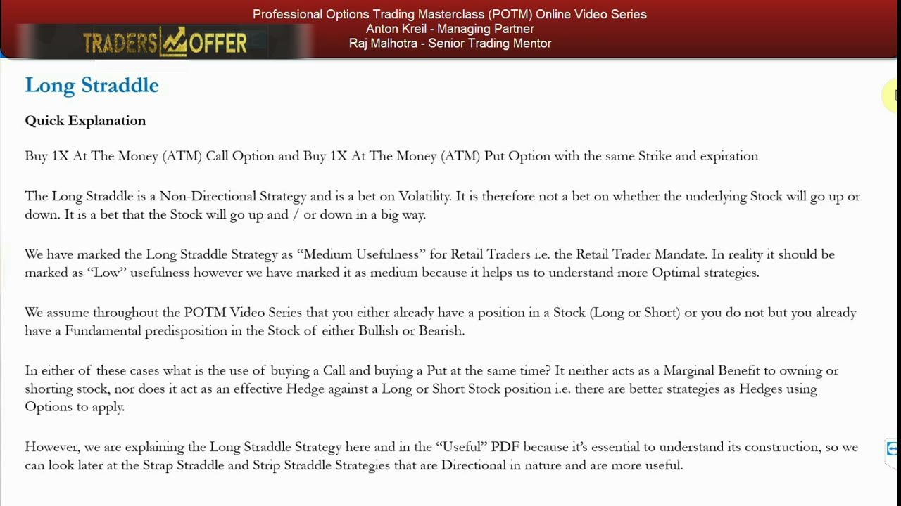
The only real use: a market maker caught short volatility
- The only genuine use of the long straddle is for a market maker in options who is caught short volatility in an asset and doesn't want to be.
- In that instance it adds value to the market maker.
- It adds NO value for those with a directional predisposition or those already holding stock and seeking an optimal hedge — i.e. the retail trader mandate.
The strategy has exactly one legitimate home: a market maker's defensive hedge. That is not you. Keep that distinction front of mind through the rest of the lesson.
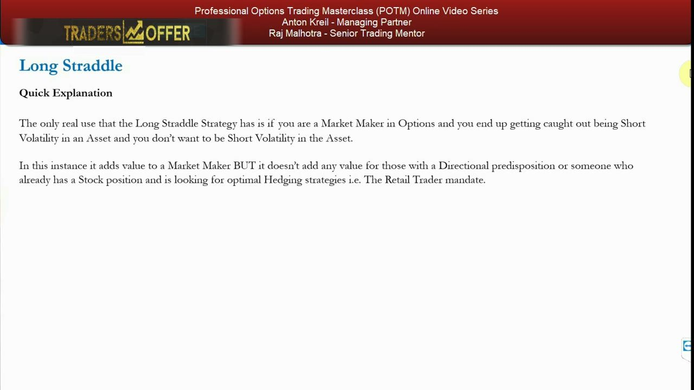
Parameters at a glance
- Non-Directional Bet · Volatility Bet.
- Simple · Two Transactions · Debit.
- Max Risk (Low, Defined) — you can only lose the premium paid.
- Max Gain (Unlimited) — because of the long call leg.
Simple to put on and risk-defined, but a costly debit strategy. The unlimited upside comes from the call; the well-defined downside is the total premium you paid for both legs.
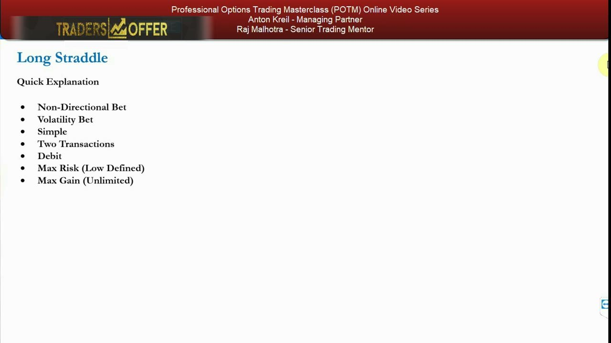
When to use it — the honest answer is: don't
- You express neither a directional nor even a neutral bias — only a bias of volatility: 'no matter which direction, I believe it will go big up or big down.'
- If the stock sits still or near the money at expiration, the whole debit is lost.
- If it goes up big, you make less than if you'd spent the same money on double the calls (or another bullish strategy).
- If it goes down big, you make less than if you'd spent the same money on double the puts (or another bearish strategy).
- With a directional bias, alternative strategies deliver a much higher % ROI for the same dollar debit.
The 'when to use' section is a misnomer — the conclusion is don't. It is a 'boredom trade' and 'I don't have a clue where it's going but I know it's going somewhere' trade; in most retail cases the premium simply erodes to zero via time decay and both legs expire worthless.
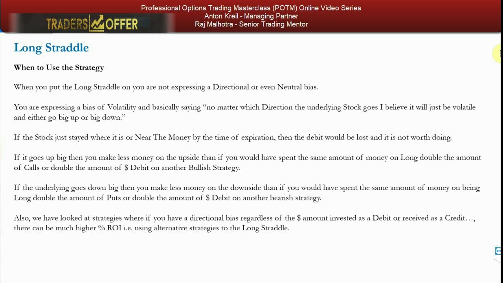
How the market maker actually uses it
- A market maker holds a negative-selection portfolio — positions chosen by clients, not by the desk — and ends up short volatility.
- If a big event hits overnight and volatility explodes, an unhedged short-vol book can blow up and lose the firm's money.
- The defence: buy multiple long straddle positions across the whole market — even at index level in index options — to negate the risk.
- Then slowly unwind both sides intraday, legging out, letting some expire, or a mix — always inside gross exposure limits.
For a market maker, the straddle is a fast, blunt hedge sprayed across the market to buy back volatility, then unwound methodically. This is the mechanic behind why markets, once volatility moves, can trend violently for days or weeks.
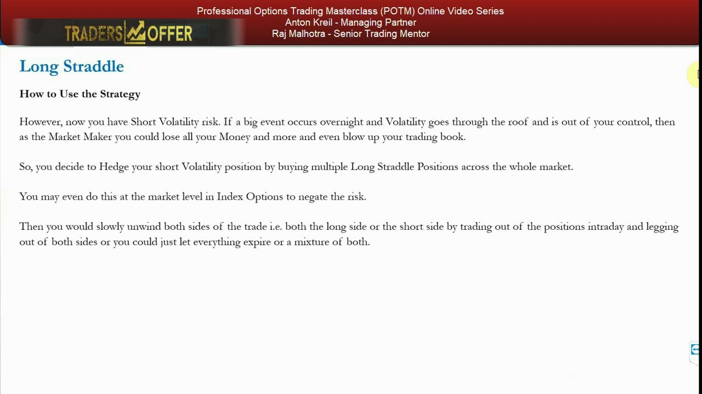
The retail trader mandate — you're not competing with market makers
- Retail traders need directional, high reward-versus-risk / high-ROI strategies, because they already hold stock or hold a systematically generated bullish/bearish predisposition (as taught in the PTM series).
- Retail traders want an edge and a marginal benefit that adds value to an existing position or predisposition.
- Retail traders do NOT hedge negative-selection portfolios, nor 'nickel and dime' (arbitrage) market makers on mispriced implied volatility.
- Anton's warning: question the motives of any educator or broker who sells the long straddle to retail — most likely a commission/volume conflict of interest, otherwise they simply don't understand the mandate.
The line is drawn hard: the straddle's uses belong to the game of market making, not to retail speculation. Watch out for anyone advocating it as a viable retail strategy.
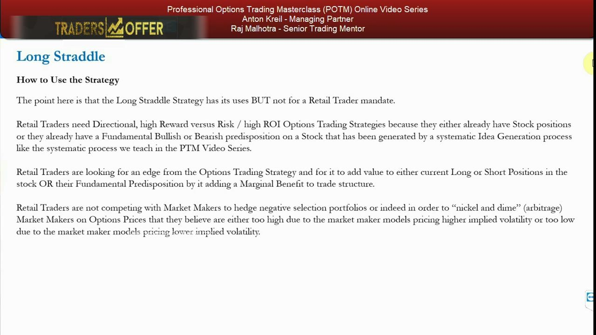
Break-evens and the calculations
- Leg A = buy 1x ATM call; Leg B = buy 1x ATM put, same expiration — an upper and a lower break-even.
- Upper break-even = Strike of Leg A + (price of Leg A + price of Leg B) = strike + total premium.
- Lower break-even = Strike of Leg B − (price of Leg A + price of Leg B) = strike − total premium.
- Maximum profit is unlimited: made when price > upper break-even OR price < lower break-even.
- Maximum loss is limited to the initial net debit; the trade returns a loss whenever price sits between the two break-evens.
The two break-evens sit a full premium above and below the strike, so the move must be large in either direction just to get to flat — and remember IV is usually already bid up ahead of any known catalyst.
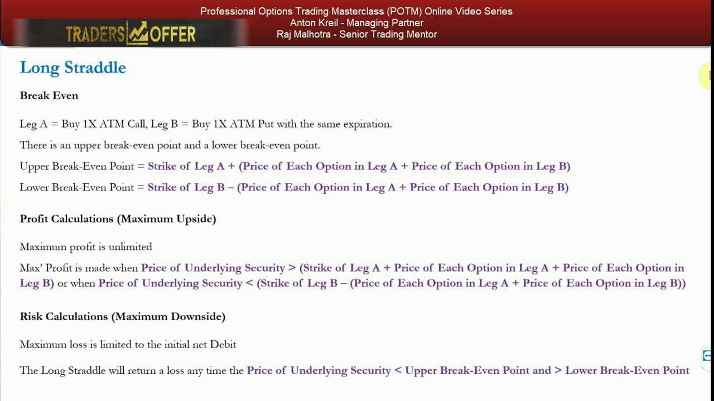
A time-horizon fallacy to avoid
- Longer-dated straddles give the holder more time to be right — but this is already reflected in the price.
- Longer-term long straddles cost more and have wider break-evens than shorter-term ones.
- So it's a fallacy that a longer-dated straddle has a higher chance of making money — the extra time is discounted into the higher volatility the market makers set.
More calendar time does not tilt the odds in your favour; the risk-reward over a long horizon is likely the same or worse, because the market makers price volatility across every time horizon.
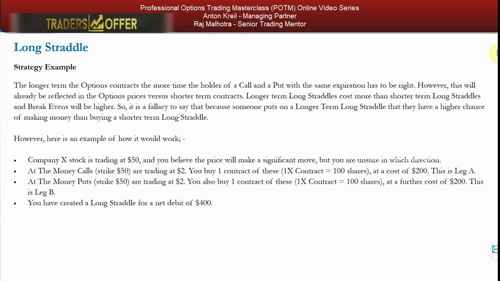
Worked example — Company X at $50, $400 debit
- Setup: Company X at $50; ATM $50 call @ $2 = $200 (Leg A); ATM $50 put @ $2 = $200 (Leg B); net debit $400. Break-evens $54 and $46.
- At $50 at expiry: both legs worthless — lose the full $400 (max loss, stock pinned at the strike).
- At $52: calls worth $2 each ($200), puts worthless — net loss $200.
- At $56: calls worth $6 each ($600), puts worthless — $200 profit.
- At $47: calls worthless, puts worth $3 each ($300) — net loss $100.
- At $42: calls worthless, puts worth about $8 each ($800) — $400 profit. The stock had to move $8 to make a meaningful profit.
The scenarios trace the V-shaped payoff: worst at the strike, improving as the stock travels either way. The takeaway Anton wants you to feel is the size of move required — an $8 swing from $50 down to $42 (or up to $58) just to bank a $400 profit.
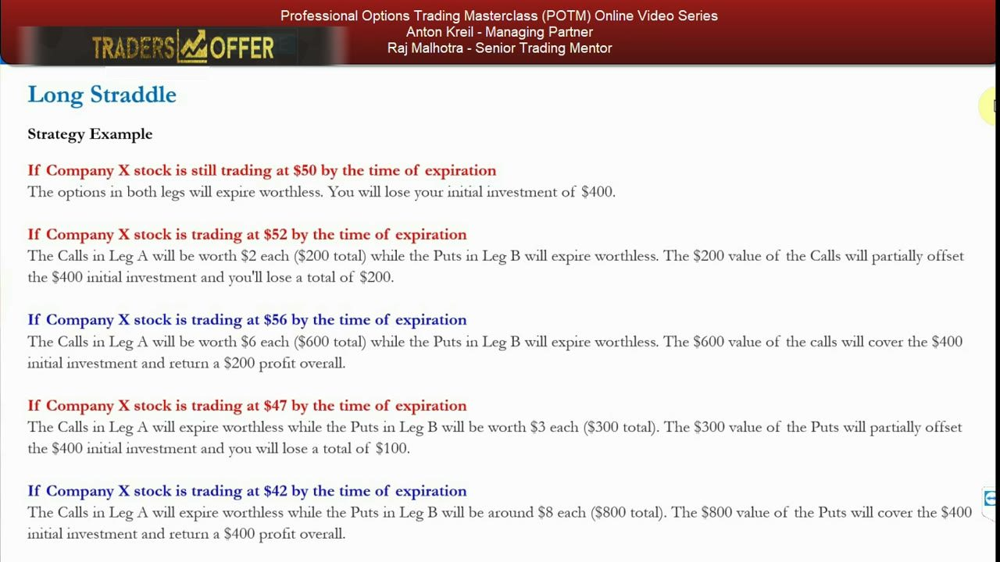
Glossary
- Long straddleBuying 1x ATM call and 1x ATM put with the same strike and expiration — a net-debit, non-directional bet that the underlying moves big in either direction.
- Non-directionalA position with no bullish or bearish bias; it profits from movement itself rather than from a chosen direction.
- At the money (ATM)An option whose strike equals (or is closest to) the current underlying price — the straddle uses ATM strikes for both legs.
- Net debitThe total premium paid to open a position when the money spent (both bought legs) exceeds anything received; here it is the sum of the call and put premiums and the maximum loss.
- Break-evenThe underlying price at which the position exactly recovers its cost — the straddle has two: strike + total premium (upper) and strike − total premium (lower).
- LegOne option component of a multi-part strategy; the straddle has Leg A (the ATM call) and Leg B (the ATM put).
- Negative-selection portfolioA book of positions chosen by clients rather than by the desk; the market maker holds them to provide liquidity and earn commissions, not from any view.
- Short volatilityExposure that loses money when volatility rises; the market maker's inventory is typically short vol, which the long straddle can hedge.
- Boredom tradeAnton's label for the long straddle in retail hands — a pointless 'I don't know where it's going but I know it's going somewhere' guess with no real predisposition.
- Retail trader mandateThe requirement that a strategy give directional, high reward-versus-risk / high-ROI edge on top of an existing position or predisposition — which the long straddle does not.